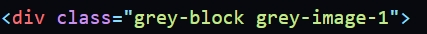

Часто задаваемые вопросы по курсу Веб верстка
-
Модуль 1: Введение
-
Обычно тут вопросов не возникает
...
-
-
Модуль 2: Базовый HTML
-
1. Как сделать якорные ссылки? Чтобы по клику на ссылки мы попадали на соответствующей раздел?
Для начала вы создаете ссылку и задаете атрибут href, в значении атрибута выпишите значения, например caption-1:
<a href="#caption-1"> Ссылка </a>
Важно понимать, чтобы якорь сработал нужно поставить решетку вначале. Это обозначение уникального индивикатора id, дальше нам нужно задать атрибут id для блока к которому мы будем ссылаться, вот так:
<div id="caption-1">
<h2> Заголовок </h2>
<p> Текст </p>
</div>Как вы видите, в значении id мы уже не указываем решетку вначале, это важно, иначе якорь не сработает
-
2. С чего начать? Вы не поняли, что вообще нужно сделать в домашнем задании?
Вы можете посмотреть данное Видео, проверяющий рассказывает как начать выполнять домашнее задание и на что стоит обратить внимание
-
3. Почему у меня не отображается картинка при подключении?
Тут возможно несколько причин:
- Вы не правильно открыли директорию проекта через vs code, выберите папку в которой лежит html файл, правой кнопкой - открыть через vs code
- Вы указали не правильный путь: href="C://Document//project/img/1.jpg" - такие пути мы не указываем. Этот путь относительно вашей файловой система. Нам нужно указывать путь относительно файла html, href="img/1.jpg". По путям вы можете почитать Статью
-
-
Модуль 3: Базовый css. Часть 1
-
Как сделать расстояние между ссылками Indents и Modules используя один и тот же класс?
- Нужно задать ссылкам одинаковый класс, например class="link"
- Используйте псевдоклассы :not(:last-child)
- Пропишите отступ следующим образом: .link:not(:last-child) { margin-right: 23px; }
-
Я не понимаю как мне реализовать 8 пункт из домашнего задания страницы article:
8.Сделать ширину у параграфов внутри серых блоков 692 пикселя, а отступ снизу - 10 пикселей. Подсказка: для простоты выполнения данного пункта используйте вложенность в CSS вида .parent .paragraph {}.Например у вас есть серый блок с классом .grey-block, а для всех параграфов вы прописали класс .paragraph.
По заданию для параграфа вы прописали ширину 872px и отступ снизу, так? А в серых блоках у параграфа свойства нужно переопределить, это делается через наследование классов, нужно обратиться через класс серого блока к параграфу, вот так:
.grey-block .paragraph { width: 692px; margin-bottom: 10px; }
<div class="grey-block">
<p class="paragraph"> text </p>
</div> -
Я не понимаю как сделать пункт 2 домашнего задания:
2. Проанализировать все текущие элементы страницы, проинспектировать их в devtools и понять, у каких элементов есть лишние отступы, не соответствующие правилам - например, использующие margin-top. Пример: у всех параграфов есть отступы по умолчанию - сверху и снизу. Вы можете сбросить их стилем margin: 0.Вам нужно пронализировать страницу. Открыть devtools, нажать ctrl+shift+c и выделить элементы, найти браузерные отступы сверху (оранжевая полоса надо элементом) и обнулить эти отступы margin-top: 0;
Как правило такие отступы могут быть у заголовков, параграфов, списков и др. элементов.
Сброс можно выполнить по селектору тега h1,h2,h3,p,ul {}
-
Подскажите пожалуйста, как обнулить отступ у последнего серого блока на странице article.html?
Предположим, что у двух серых блоков одинаковый класс - class="grey-block", чтобы обнулить отступ у последнего серого блока нужно использовать псевдокласс, запись будет следующая: .grey-block:last-child { margin-bottom: 0px; }
-
Как сделать так, чтобы стили элементов на страницах не пересекались?
Нужно задавать классы каждому тегу и по классам писать стили, тогда стили пересекаться не будут, для каждой страницы можно в классе использовать prefix, например:
Страница статьи, prefix - article:
- Для параграфов - class="article__paragraph"
- Для заголовков - class="article__h1", class="article__h2", class="article__h3"
- Для списка - class="article__list
- Для тега li - class="article__item
- Для ссылки a - class="article__link"
Главная страница, prefix - home:
- Для ссылок - class="home__logo", class="home__link", class="home__download"
А так же примеры задания классов вы можете посмотреть Тут
-
-
Модуль 4: Базовый CSS. Часть 2
-
У меня не получается правильно реализовать изображения в серых блоках, помогите пожалуйста?
Допустим вот так выглядит наш серый блок:
Чтобы правильно пописать фоновое изображение, нам не нужно внутри серого блока создавать дополнительный div. Достаточно просто добавить второй класс, например:
И по второму класс gray-image-1 прописать в css свойства background-image, background-position, background-repeat, background-size: contain - чтобы фоновая картинка занимала всю высоту блока. О данный css свойствах рассказывалось в уроках, всегда старайтесь во время выполнения возвращаться к урокам и пересматриваться их.
Важно! Повторяющиеся свойства старайтесь писать по общему классу, например background-position, background-repeat, background-size можно прописать по классу grey-block, а background-image по классу grey-image-1 и grey-image-2
-
-
Модуль 5: Подготовка к верстке
-
Почему так себя ведут блоки модулей? Как их выровнять?
Это происходит, потому что у них задан display: inline-block;. Так себя могут вести блоки, если у них разное наполнение контента. Чтобы это исправить нужно для блоков модулей прописать vertical-align: top;
-
Из за чего 2 блока модуля не помещаются в одну строку?
Чтобы решить данную проблему, могут быть несколько причин:
- Не прописано для блоков модулей css свойство display: inline-block;
- Указали не правильную ширину блоков
- Указали не правильную ширину container-a
- Нужно обнулить отступ справа у крайних блоков справа, то есть у каждого второго. Это можно правильно реализовать с помощью псевдокласса: .module__card:nth-child(2n) { margin-right: 0; }
- Не обнулили браузерный отступ у тега - ul
- Между блоками модулей есть браузерный отступ - баг в 2px. Его можно убрать, прописав для тега ul в котором находятся блоки модулей: font-size: 0;. Не забудьте для контента вернуть размер шрифта
-
Как мне реализовать блоки модулей в макете, я не представляю даже с чего начать?
Нужно внимательно прочитать еще раз задание. В задании написано, что блоки модулей нужно реализовать через список ul, где один блок модуля - это тег li. Чтобы вам было легче - посмотрите пример.
- Постарайтесь не просто скопировать его, а разобраться, что там происходит.
- Обратите внимание как реализовано фоновое изображение. Такой способ реализации более гибок. Псевдоэлементы вы еще не проходили, но вы можете заглязнуть вперёд в 10 модуль, там расскаывается про него, пока можно просто скопировать идею.
- Повторите в 3 модуле урок про Организацию отступов, их нужно реализовать правильно
-
-
Модуль 6: Layout. HTML-разметка - Рекомендации
- Как вы уже поняли главного заголовка страницы h1 на макете нету. Наша задача для доступности создать данный заголовок (придумать) и скрыть с помощью специального класс vissually-hidden
-
Чтобы правильно определить заголовки, нужно придерживаться иерархии. Представьте книку:
Книга - h1, Разделы - h2, Глава - h3. Так бы мы ее разметили так? А теперь как же нам применить это к нашему макету?
Мы знаем, что заголовка h1 у нас нету, но мы его придумали - отлично. А теперь представьте, что секции начинаются с загловков и почти в каждой картчоке есть заголовки (не везде), но их нужно постараться найти.
Так вот Разделы это и есть наши секции, а Главы это карточки, если сопоставлять с иерархией нашей книги.
-
Важно правильно использовать container. Помните, что container должен находиться внутри каждого блока: header, section, footer.
Container - ограничивает контент каждого блока с определенной шириной и выравнивает его по центру
- Возможно вы сталкнетесь со сложностью - как лучше разметить текст с ценой в карточках размещения. Подсказка: для выделения каждого фрагмента текста можно использовать тег span задав ему индивидуальный класс
- Определите похожие между собой элементы, например почти в каждой секции они есть, используйте для них список. В каждой секции достаточно использовать один список
-
Модуль 7: Layout. Flexbox
-
Как правильно реализовать блок спецпредложения, как сделать так, чтобы правая карточка занимала высоту двух левых карточек?
Возможно придется поменять структуру, если вы сделали данные карточки единым списком. Зачем это делать?
Дело в том, чтобы растянуть карточки по отношению друг к другу, не меняя структуру (если оставить карточки списком) нам придется задать фиксированную высоту для блока. Как мы знаем, фиксированная высота - это плохо для переполнения контента
Поэтому нам нужно разбить картчоки на div-ы, как в этом примере
-
-
Модуль 8: Layout. Стилизация
-
Как разместить все стрелки на странице правильно? У меня не получается их правильно выровнять относительно текста.
Хороший вопрос. По идее стрелки - декоративные изображения и их было бы правильно разместить фоном через css: свойство background. Но есть проблема, в 10 модуле нам нужно будет реализовать эффекты hover, focus, active.
В реализации эффектов - нам придется менять цвет стрелки, сдвигать ее. Чтобы сделать это правильно, наша стрелка должна быть размещена svg кодом прямо в разметке, а не через css: background. Почему?
Потому что, чтобы реализовать эффекты через background, вам придется заменять одну фоновую картинку на другую. Выгружать каждую картинки с разным цветом. Это долго и не правильно в целях оптимизации сайта, очень дорого для сайта во время эффекта заменять одну картинку на другую
Поэтому размещаем стрелки внутри ссылки svg кодом. Как это сделать?
Выделяем слой в figma:
Нажимаем правой кнопкой:
И с помощью ctrl+v вставляем в html
Ну и чтобы выронять правильно стрелки относительно текста, нужно по классу ссылки прописать display: inline-flex; align-items: center;
-
Подскажите пожалуйста, как правильно реализовать разделительную линию во второй части header?

Данная линия реализовывается через border. К примеру слева от нее у вас навигация со списком. Что нужно сделать:
- Проверить, чтобы у родителя навигации не было css свойство align-items: center. Иначе высота навигации будет занимать высоту контента. А нам нужно, чтобы навигация занимала высоту родительского блока
- Для навигации нужно прописать padding-right в соответствии с макетом и border-right
-
Остальные разделы в работе....